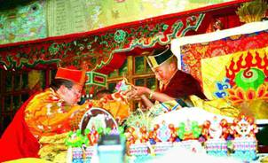

Ogyen Trinley Dorje
As the Karmapa born in the late 20th century, it is the task of the Seventeenth Karmapa to bring spiritual teachings nurtured in the mountain hermitages of Tibet fully into the era of globalization, when those teachings are so urgently needed. To do so, on June 19, 1985, the reincarnation lineage of the Karmapas took form for the seventeenth time, with the birth of a young boy in Tibet.
As he had indicated in his previous life as the Sixteenth Gyalwang Karmapa, His Holiness the Seventeenth Karmapa was born in eastern Tibet, to a mother named Lolaga and a father named Döndrup. For the first years of his childhood, the Gyalwang Karmapa shared his family’s simple nomadic life in a remote and rugged corner of Tibet’s high plateau.
When he was just seven years old, a search party arrived at his family’s camp. Following the detailed instructions of the letter written by his previous incarnation, the Sixteenth Karmapa, the party was able to locate the young Karmapa. The child’s identification as the Karmapa was verified not only by Tai Situ Rinpoche, Goshir Gyaltsap Rinpoche and many other major Karma Kagyu lamas, but also by His Holiness the Dalai Lama.
His Holiness returned with the search party to Tsurphu Monastery in central Tibet, where he was enthroned and given his initial monastic ordination. He thereafter commenced the process of study and training traditional for Karmapas, yet began offering spiritual instruction to others almost at once. His first public teaching, given at Tsurphu in Tibet when he was just eight years old, was attended by over 20,000 people. However, the major Karma Kagyu lineage holders were denied permission to enter Tibet to transmit the essential instructions of the lineage to him, a situation that constituted an insurmountable obstacle to his functioning fully as Karmapa in the world. When the young Karmapa found his situation in Tibet intolerable, at the age of 14, he escaped from Tibet to India, seeking freedom to fulfill his role as a world spiritual leader and to meet his responsibilities as head of the Karma Kagyu lineage.
Crossing the Himalayas by jeep and on horseback, on foot and by helicopter, Gyalwang Karmapa reached Dharamsala, India, on January 5, 2000. There, he was received warmly by His Holiness the Dalai Lama, with whom the Gyalwang Karmapa has since continued to enjoy a close relationship of mentor and protégé. During the 11 years he has lived in India as a refugee, the Gyalwang Karmapa has undergone a traditional monastic training and philosophical education, while also pursuing a private modern education. His Holiness receives tens of thousands of visitors each year from all over the world at his residence in Dharamsala. Since 2004, he has led the Kagyu Monlam Chenno, an annual winter Dharma gathering in Bodhgaya that draws thousands of attendees from many different Buddhist traditions around the world.
In May 2008, His Holiness made his first long-awaited trip to the West, travelling to the United States where he visited many spiritual centers under his guidance, including his North American seat in New York. In November 2009, His Holiness spoke at a TED conference in Bangalore, becoming the youngest person ever to do so. In January 2010 in Bodhgaya, 12,000 people attended the live performance of a play His Holiness wrote and produced on the life of Milarepa, combining elements of traditional Tibetan opera and modern theatre.
 Along with his efforts to preserve and present Tibetan culture, the Gyalwang Karmapa has also travelled across India to participate in the cultural and religious life of his adopted home. From inaugurating temples for Sai Baba in Tamil Nadu to commemorating Mother Teresa’s 100th birthday in Calcutta, His Holiness has met with many other spiritual leaders in a spirit of mutual respect and tolerance. His Holiness further serves as a Dharma teacher to the Buddha Vikas Sangh and other communities of Indian Buddhists around the country.
Out of reverence for the origins of Buddhism in India, His Holiness introduced the use of Sanskrit prayers in the massive Kagyu Monlam prayer gatherings he directs. His Holiness has also taken steps to revive lost Indian Buddhist song traditions. After seeking out the original Sanskrit texts of sacred songs (dohā) from his Dharma lineage, the Gyalwang Karmapa invited Indian classical singers who performed at the opening ceremony of the Karmapa 900 celebration in Bodhgaya in December, 2010. This performance marked the first time the sacred Sanskrit song was performed in India in nearly a millennium.
Two issues that His Holiness has particularly championed are women’s rights and environmental protection. He has instituted numerous practical programs to care for the environment as a way of caring for future generations, and has personally committed to ensuring that in the future, women will have the opportunity to receive full ordination as nuns within the Tibetan Buddhist tradition.
In this way, the Seventeenth Karmapa acts within a vast horizon of benefit, yet his forward-looking deeds remain deeply grounded in a respect for the past. As a scholar and meditation master, as well as painter, poet, songwriter and playwright, the Seventeenth Karmapa embodies a wide range of the activities that Karmapas have engaged in over the centuries. As an environmental activist and world spiritual leader whose teachings are often webcast live, His Holiness is clearly bringing the Karmapa lineage’s activities fully into the 21st century.